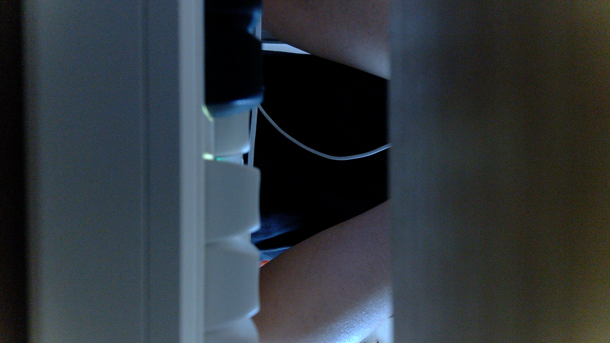

---
doc-type: evidence
title: V4L2 用户态编程 Day 5 图像验证记录
course-stage: "08"
learning-status: in-progress
evidence-status: verified
updated: 2026-08-30
---
V4L2 用户态编程 Day 5 图像验证记录
今天已经实际完成
- 在 RK3568 板端打开
/dev/video0，设置 3840×2160 NV12。 - 完成
REQBUFS → QUERYBUF/mmap → QBUF → STREAMON → poll → DQBUF。 - 根据
buf.index找到对应 mmap 地址。 - 根据
planes[0].bytesused=12441600保存第一帧。 - 生成 frame_000.nv12。
- 使用 FFmpeg 转换为 frame_000.png。
- 板端自动验收：
Day 5 save NV12 frame acceptance: PASS (12441600 bytes)。
完整源码：capture_one_frame.c
板端日志：capture-one.log
实验说明：保存主线与推荐观看顺序
一、保存一帧时的对象关系
VIDIOC_DQBUF 返回
├─ buf.index = 0
│ └─ 本帧位于 buffers[0]
├─ buf.length = 1
│ └─ 当前 Buffer 有一个独立内存 Plane
└─ planes[0]
├─ bytesused = 12441600
└─ data_offset = 0
应用登记表
└─ buffers[0]
├─ start[0] → mmap 用户虚拟地址
└─ length[0] = 12441600
真正写文件
└─ 从 start[0] + data_offset 开始
写入 bytesused - data_offset 字节DQBUF 没有复制一张新图。它只是把完成 Buffer 的描述和所有权交还应用；应用随后读取 Day3 已建立的 mmap 地址。
二、三个长度不要混淆
| 字段 | 当前值 | 含义 |
|---|---|---|
sizeimage | 12441600 | S_FMT 后驱动给出的该 Plane 最低容量要求 |
planes[0].length | 12441600 | QUERYBUF 返回的实际映射容量 |
planes[0].bytesused | 12441600 | DQBUF 后当前帧真正有效的数据长度 |
planes[0].data_offset | 0 | 有效数据相对 mmap 首地址的起点 |
本次它们恰好相等，不代表所有格式和驱动都永远相等。尤其是 JPEG、H.264 等压缩数据，Buffer 容量通常固定，而每帧 bytesused 会变化。
保存代码因此按下面关系计算：
data = buffers[buf.index].start[plane] + planes[plane].data_offset;
valid_bytes = planes[plane].bytesused - planes[plane].data_offset;
fwrite(data, 1, valid_bytes, output);三、为什么当前 NV12 只有一个 Plane
当前节点使用的是 Multiplanar API，所以必须通过：
struct v4l2_plane planes[VIDEO_MAX_PLANES];
buf.m.planes = planes;但驱动返回：
num_planes = 1这表示 Y 区域和 UV 区域连续存放在同一个内存 Plane 中：
一块 12441600 字节内存
├─ 前 3840×2160 字节：Y
└─ 后 3840×1080 字节：交错 UV因此直接按 bytesused 保存 plane[0]，就得到完整 NV12 文件。
四、板端与电脑端验证结果
板端输出：
format plane[0] : bytesperline=3840 sizeimage=12441600
dequeued frame : index=0 sequence=2 planes=1
saved plane[0] : bytesused=12441600 data_offset=0 written=12441600
bytes written : 12441600电脑端文件：
frame_000.nv12：12441600 字节
frame_000.png ：17776164 字节
PNG 分辨率 ：3840×2160
PNG 像素格式 ：RGB24FFmpeg 转换命令：
ffmpeg -f rawvideo -pixel_format nv12 -video_size 3840x2160 `
-i frame_000.nv12 -frames:v 1 frame_000.png当前 capture_one_frame.c 没有使用或链接 FFmpeg 库。板端程序只通过标准 C 的 fopen()、fwrite() 保存原始 NV12；程序结束后，电脑再单独启动 ffmpeg.exe 读取这个文件并转换 PNG。
三种方式要区分：
当前方式：程序写 NV12 → 外部 ffmpeg.exe 命令转换
链接库方式：C 程序链接 libavformat/libavcodec/libswscale
启动进程方式：C 程序通过 system()/popen() 启动外部 ffmpeg.exe后两种都不是本次 Day5 的实现。Day5 故意分开抓帧与转换，先验证 V4L2 Buffer 保存是否正确。
五、实际画面检查

视觉结论：
- 画面内容可以辨认，Camera 全链路已经产生真实图像。
- 没有明显绿屏或紫屏，当前按 NV12 解释没有出现典型 NV12/NV21 UV 顺序错误。
- 没有明显横向错位、分层或倾斜行，
bytesperline=3840与当前保存方式匹配。 - 没有明显截断或撕裂，文件长度与 4K NV12 理论值一致。
- 画面方向由 Camera 实际安装方向决定，不属于 Buffer 或像素格式错误。
- 场景较暗、噪点明显，这是曝光、增益、光照或 ISP 参数问题，不是本次保存流程失败。
图像统计：
尺寸 ：3840×2160×3
B/G/R 平均值 ：59.46 / 54.59 / 48.10
灰度平均值 ：53.22
灰度标准差 ：36.71
灰度 P1/P50/P99 ：0 / 54 / 146
接近全黑像素占比 ：19.79%
接近全白像素占比 ：0%这些数值支持“画面较暗但不是全黑”的视觉判断。
六、能证明什么，不能证明什么
当前证据能够证明：
- Sensor → D-PHY → CSI → RKISP → mainpath →
/dev/video0的数据链路能够输出真实图像。 - 应用正确使用
buf.index、mmap 地址和bytesused保存了一帧。 - 3840×2160 NV12 文件大小、转换尺寸和画面排列一致。
- 当前 NV12 解释下没有明显 UV 顺序或 stride 错误。
当前证据仍不能证明：
- 长时间运行始终不丢帧、不超时。
- 实际 FPS 长期稳定在 30。
- 自动曝光、白平衡、降噪和其他 ISP 效果已经调优。
- 应用异常退出和所有错误路径都能完整释放资源。
这些属于 Day6 的连续 100 帧、FPS 和异常处理。
七、你的 Day5 验收题
1. 保存图像时，为什么应该使用 bytesused，而不是直接把整个 length 都写入文件？
我的回答：
只写当前帧的有效数据，避免把无效区域也保存进去。
[!success]- 正确答案（回答后再展开）length是 Buffer Plane 的总容量，bytesused是当前完成帧真正有效的数据范围。二者当前相等只是本次 NV12 的结果；对齐、压缩格式或其他驱动中可能不同，直接写整个 length 可能把无效尾部数据也保存进去。
2. DQBUF 返回 buf.index=2 时，应用应该从哪里读取图像？
我的回答：
从第三个 Buffer，也就是 buffers[2] 对应的 mmap 地址开始读，有效长度看 bytesused。
[!success]- 正确答案（回答后再展开）
应用应读取buffers[2].start[plane] + planes[plane].data_offset，有效长度为bytesused - data_offset。buf.index把 DQBUF 的完成描述与 Day3 保存的 mmap 地址对应起来。
3. NV12 有 Y 和 UV 两部分，为什么当前只保存 plane[0] 也能得到完整图像？
我的回答：
Y 和 UV 连续放在同一个内存 Plane 中。Plane 可以理解为一块独立描述和映射的图像内存区域，但它不一定只保存一个颜色分量。
[!success]- 正确答案（回答后再展开）
因为当前驱动返回num_planes=1，Y 与交错 UV 连续存放在同一个内存 Plane 中。Multiplanar API 只是接口形式，不代表当前格式一定有两个独立内存 Plane。
4. 文件大小正确并且能转换成 PNG，能否单独证明画面完全正确？
我的回答：
能吧。
[!success]- 正确答案（回答后再展开）
不能。它能证明长度和基本格式解释成立，但仍需实际查看颜色、亮度、画面方向、stride 错位、撕裂和内容；还不能证明长时间稳定性和 ISP 画质已经调好。
5. 如果转换后出现绿屏、图像横向错位或文件截断，分别优先检查什么？
我的回答：
绿屏应该是 UV 数据读写或顺序的问题；横向错位和文件截断可能与读取偏移有关。补充修正：横向错位优先检查 stride/bytesperline，文件截断优先检查 Plane 数、bytesused 和文件总长度。
[!success]- 正确答案（回答后再展开）
绿屏或明显偏色优先检查 NV12/NV21 与 UV 顺序；横向错位优先检查bytesperline、stride 和每行对齐；截断或撕裂优先检查宽高、Plane 数、bytesused、data_offset和实际文件长度。